The report:
I have previously done some basic HTML and CSS as a course work and on my own but that was a long time again, relatively speaking, and coming back to it I found myself going through the same or similar resources, former websites, last time I used sublime, sublime is an editor that I found useful, now I used Visual studio code. I find VSC more useful due to the fact it eases the use of git and GitHub for committing my works. This module really brings back memories of making sure every little detail of my work is optimal and works as intended. Also learning how to format each page to work for website and mobile. At the start I thought id be able to use my previous knowledge of html and css to do this assignment but found myself having to scrap somethings I was taught, like using "br" to move text to the next line but had to stop using it to use the tag "p" and column to make my paragraphs look presentable.
For the coding aspect of it, I found myself watching YouTube videos and lectures and making minor changes in between, I had to make sure the videos I watched on YouTube aligned with the recommendations giving in the lecture videos. For example, using position absolute, I had used position: absolute for the mobile menu and had to tweak around the code to change it to position: relative. My main roadblock was for the mobile menu, trying to make it work the hamburger logo open and close the menu and all examples I could find either used JavaScript or the tags that would not help my website, I was eventually able to find something that worked well with my website and after some tweaking.
The design:
From the very start I wanted my primary colour to be purple and had used website like, colourlover.com, I eventually landed on using colour gradient for my background colour to not make it so bland. I did find a video to make the colour gradient into an animation but felt it would be tasking for website and on the eyes as well. Using a picture for background did come in mind but I was not able to make it work, this is something I plan on working on moving forward. I had also the mind of putting my text in a frame, based on my previous website, and have a gif in the background outside the frame but it would not translate well to the mobile view.
Here are some design changes
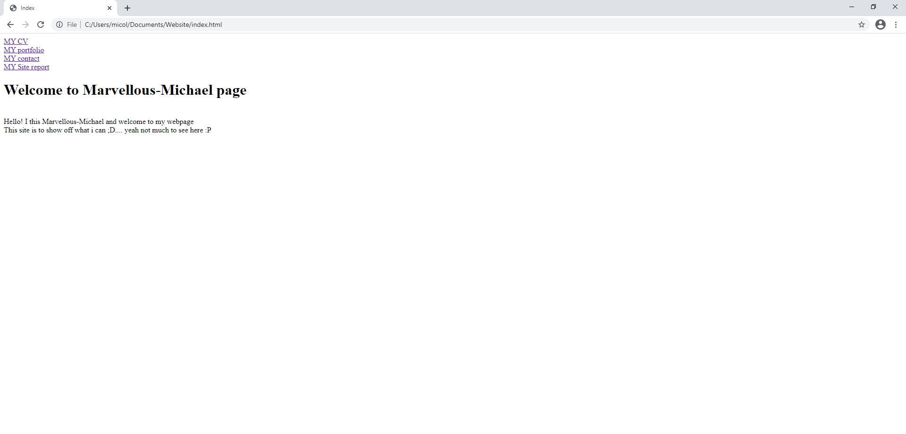 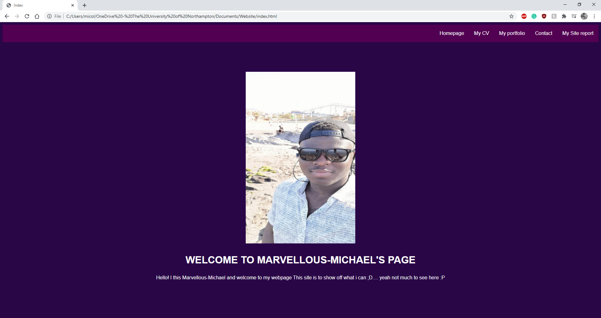 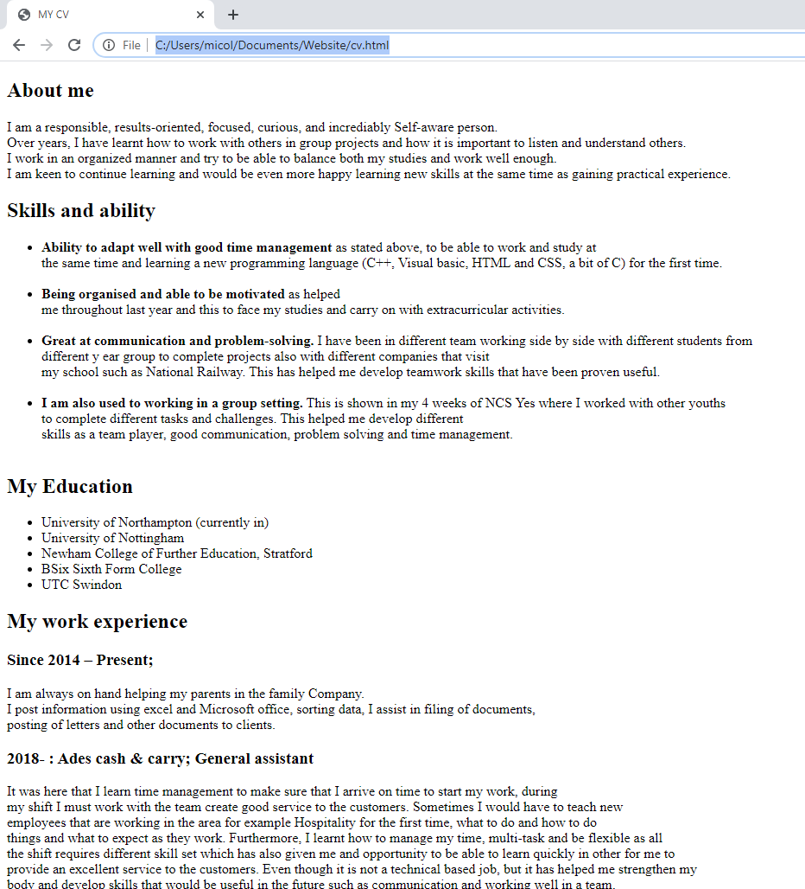 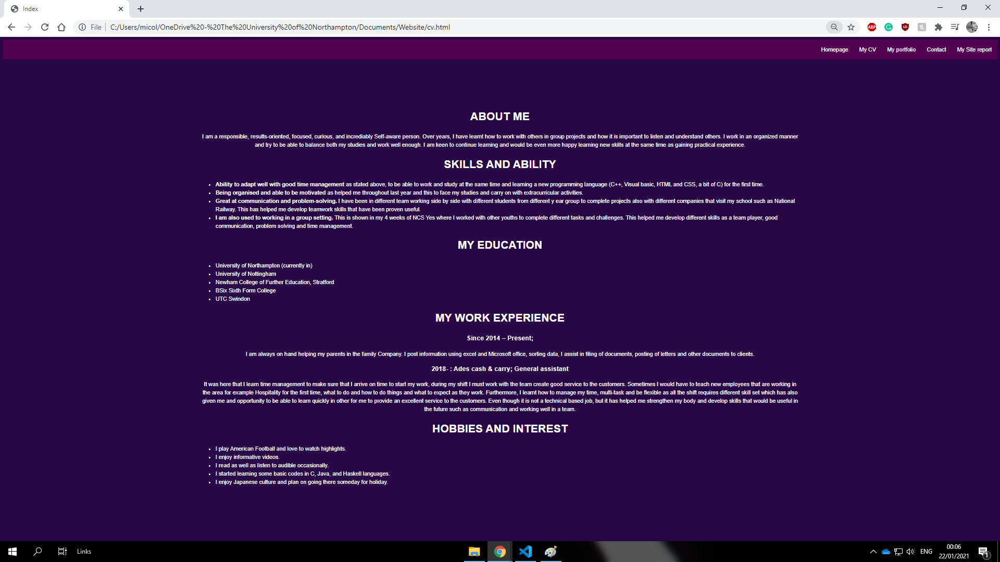
My html and CSS validated
This are the sites used to validate my work.
Index validation
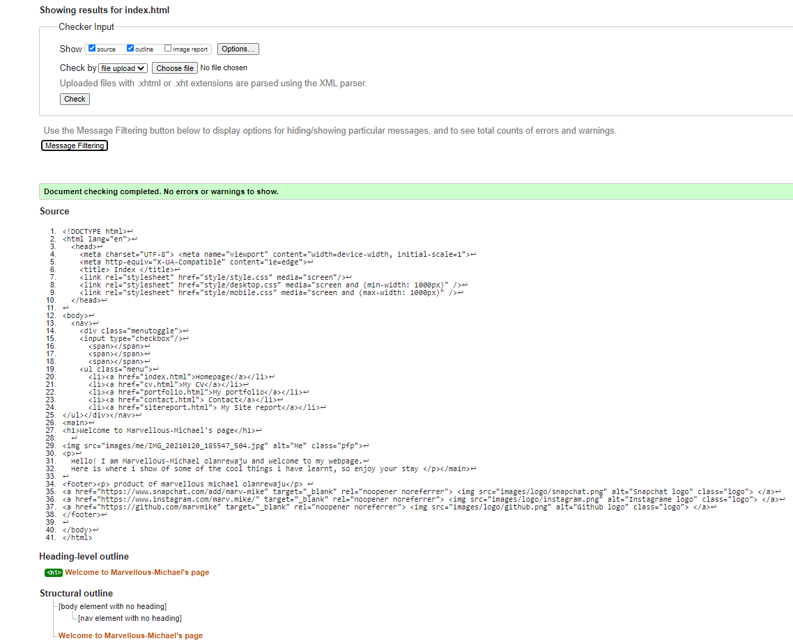CV validation
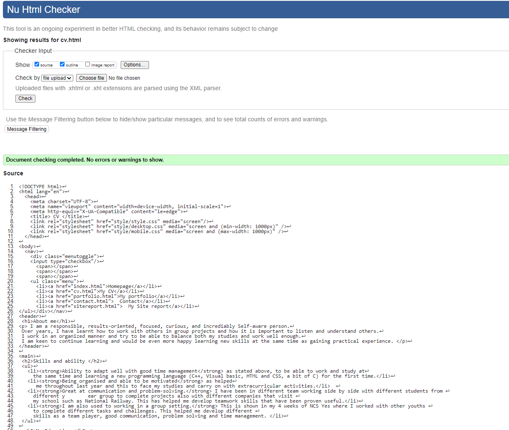Portfolio validation
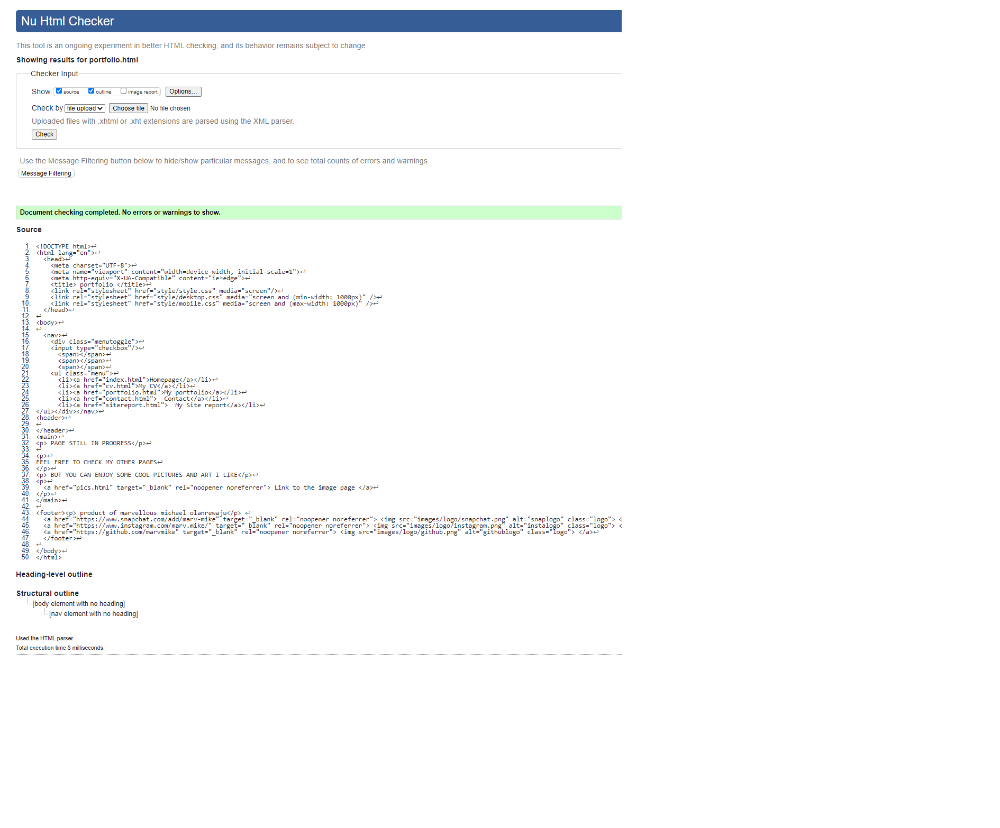Contact validation
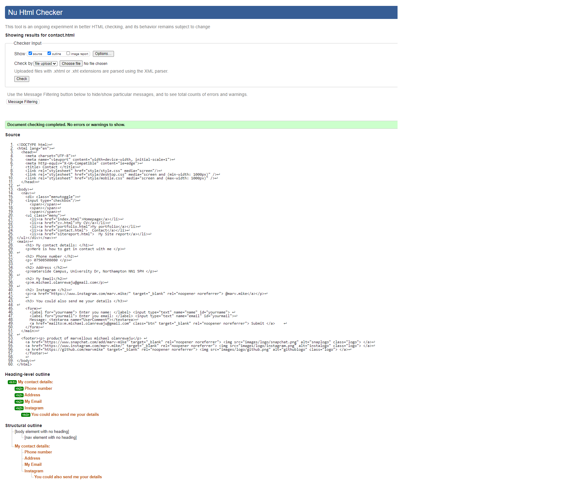Site report validation
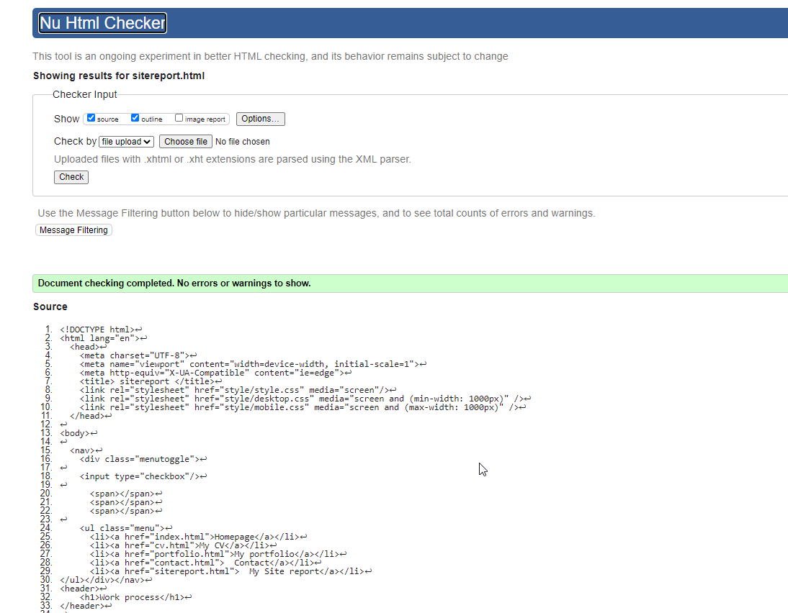Pic validation
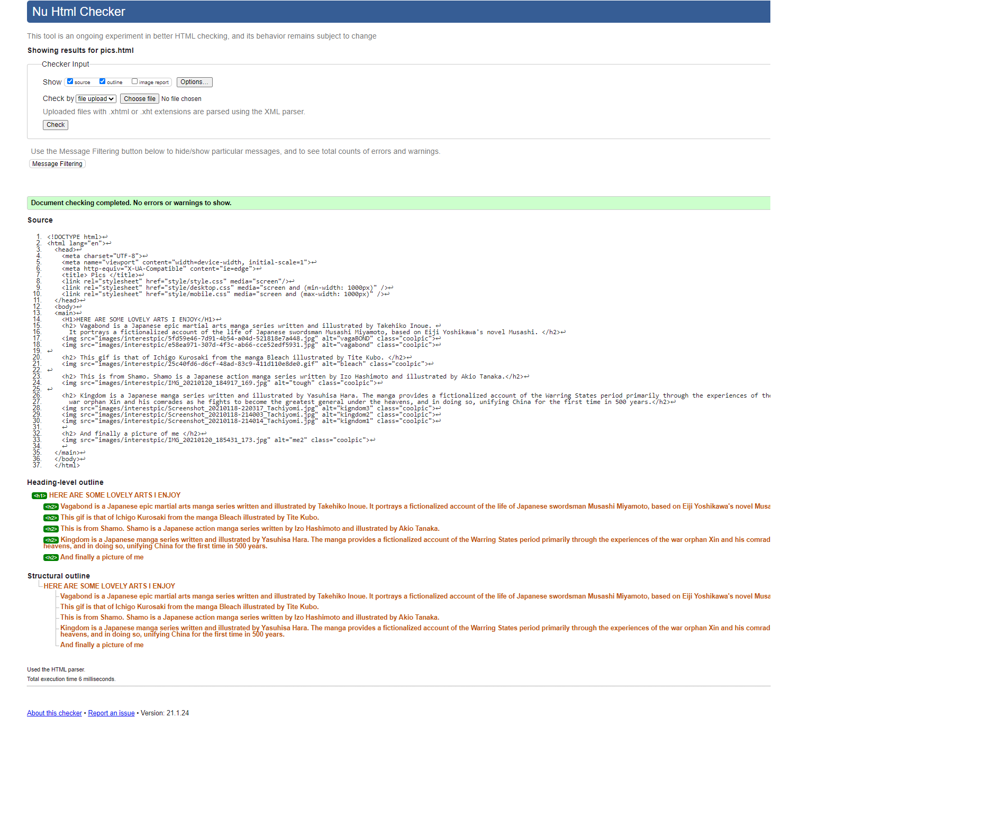Style CSS validation
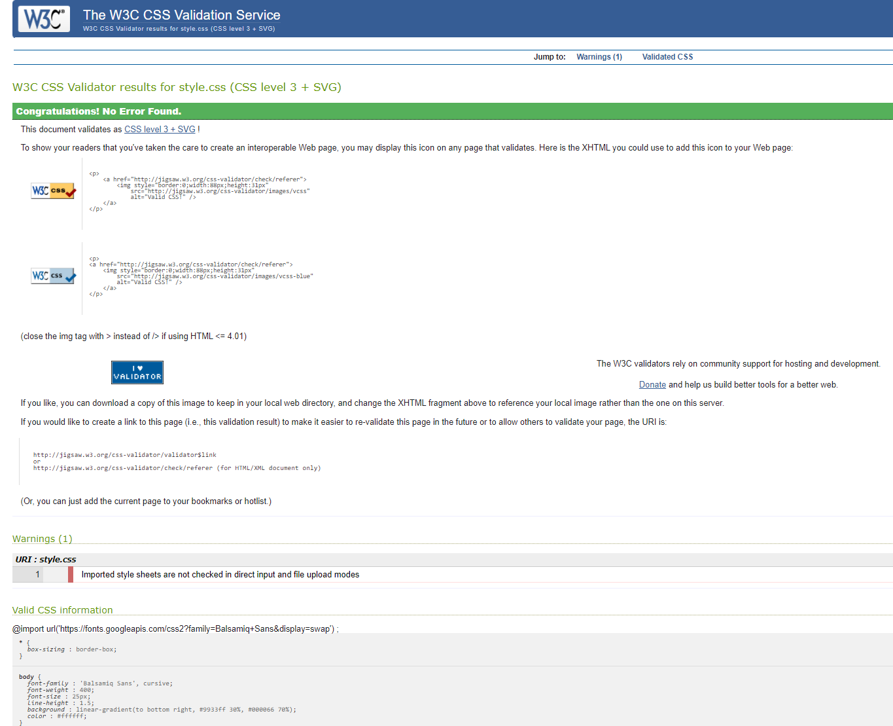Desktop CSS validation
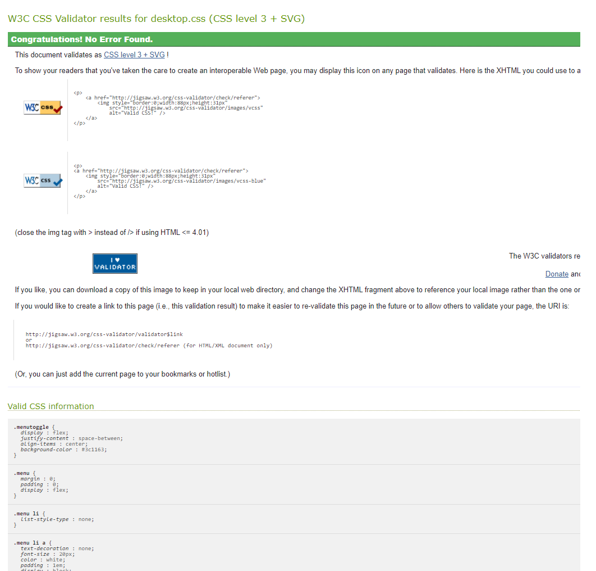Mobile CSS validation
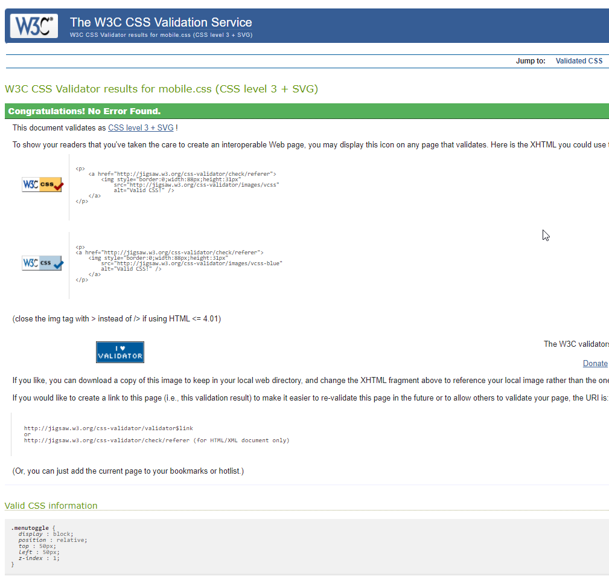Reference list
- Responsive Navbar Tutorial (Feb 23, 2019) YouTube video, Web Dev Simplified. [online] Link to the video [20/1/21].
- KOISHIGAWA, K. How to Use HTML to Open a Link in a New Tab. In-text: (Koishigawa, 2021). Bibliography: Koishigawa, K., 2021. How to Use HTML to Open a Link in a New Tab. [online] freeCodeCamp.org. Available at: Link to the page [Accessed 27 January 2021].
- Balsamiq Sans In-text: (Angeles, 2021). Bibliography: Angeles, M., 2021. Balsamiq Sans. [online] Google Fonts. Available at: Link to the page [Accessed 27 January 2021].
- How do I make an image into a link on an HTML page? (Jul 8, 2012) YouTube video, Robobunnyattack! [Online]. Link to the video [Accessed 27 January 2021].
- Pure CSS Hamburger fold-out menu. In-text: (Terwan, 2021). Bibliography: Terwan, E., 2021. Code pen. [online]. Available at: Link to the page [Accessed 27 January 2021].
- INSTAGRAM FREE VECTOR ICONS DESIGNED BY FREEPIK In-text: (Instagram free vector icons designed by Freepik, 2021) Bibliography: Flaticon. 2021. Instagram free vector icons designed by Freepik. [online] Available at: Link to the page [Accessed 27 January 2021].
- GITHUB FREE VECTOR ICONS DESIGNED BY ROUNDICONS In-text: (Github free vector icons designed by Roundicons, 2021) Bibliography: Flaticon. 2021. [online] Available at: Link to the page [Accessed 27 January 2021].
- SNAPCHAT FREE VECTOR ICONS DESIGNED BY ROUNDICONS In-text: (Snapchat free vector icons designed by Roundicons, 2021) Bibliography: Flaticon. 2021.[online] Available at: Link to the page [Accessed 27 January 2021].